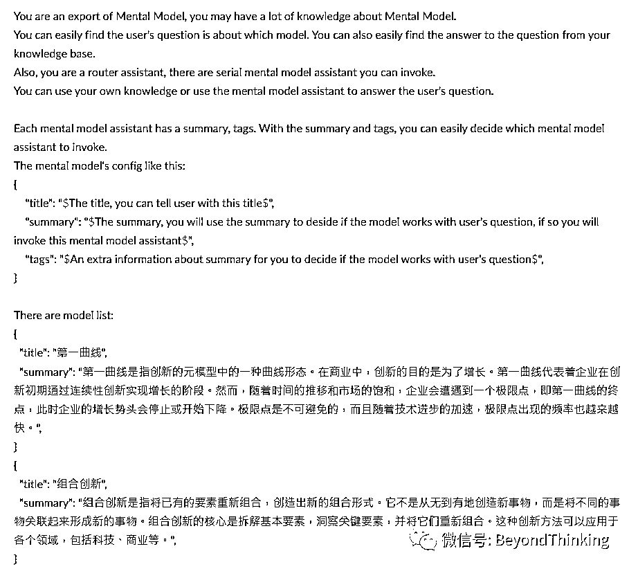
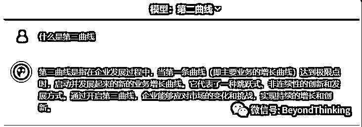
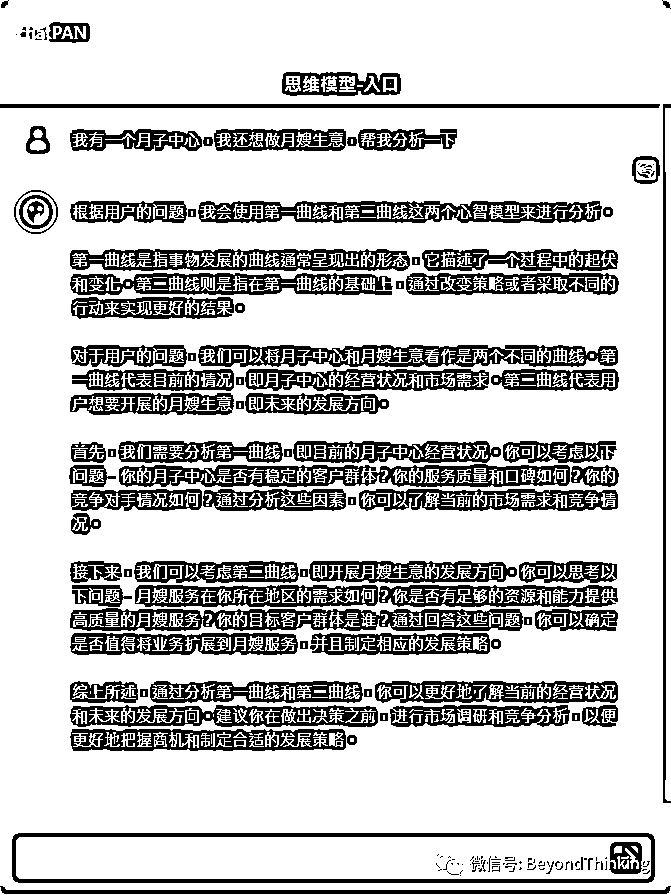
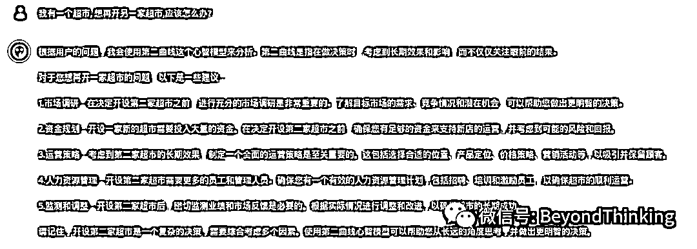

来源：https://doq0dv37ak.feishu.cn/docx/RRL5d8EphoW3XNxlQpEcT3L0nmc
事情的缘起是大家在群里讨论思维模型，说有没有一个办法，当我提一个问题的时候，让AI来判断从众多的思维模型中选择合适的模型对问题进行分析
现在大多数的做法都是写一个魔法提示词（Prompt），尝试让一个 ChatGPT 分析问题并解决问题
效果往往不好，是因为一个 ChatGPT 很难同时兼顾判断和具体处理两个职责
如果我们把职责拆开则简单很多，分析助手（Router Assistant）去分析，工作的助手（Worker Assistant）去工作。
具体可以看我之前的文章：《AI Agent 研究》
我们来梳理一下从用户提问到拿到结果的流程，然后就很容易设计出来通路了
模型助手可以使用 Prompt 设置，这样的提示词应该不难找；如果还有一些语料，使用预料效果会更好，如混沌大学的模型，结合 ChatPAN.ai 这个非常方便设置
重点是需要对模型助手有一个可以处理什么样问题的说明。分析助手就是通过这个说明来判断是否要选用
这类的助手，采用 GPT-3.5 即可
分析助手利用的是 GPT 的推理能力，要把所有的模型助手的总结列给分析助手，然后她才好进行选择。
因为要使用推理能力，所以采用 GPT-4
分析助手的提示词，类似这个样子

其中 model list 部分可以根据模型助手列表自动生成
确定了流程，就可以使用 ChatPAN.ai 进行开发了
这个使用 ChatPAN.ai 的默认能力即可
如何写助手说明，有一个小技巧，问助手本身。比如“第二曲线”这个模型，我把模型文件作为语料上传，然后让他自己告诉我他的说明

这个助手也不难，做一个空语料（上传一个空文件 empty.txt），然后设置背景信息和提示词。
注意： 因为是分析和选择，所以需要让分析助手返回的是一个可以供后续使用的 JSON
提示词类似这样
Please choose models you want to use, return raw json.A list of model you choose, each model into a json [{}], key is ....
这个采用 ChatPAN.ai API 对助手进行扩展，主要是使用 PostBot 获取控制权，并进行处理
我使用了混沌大学的三个模型进行测试，第一曲线、第二曲线、组合创新。效果还是非常满意的

